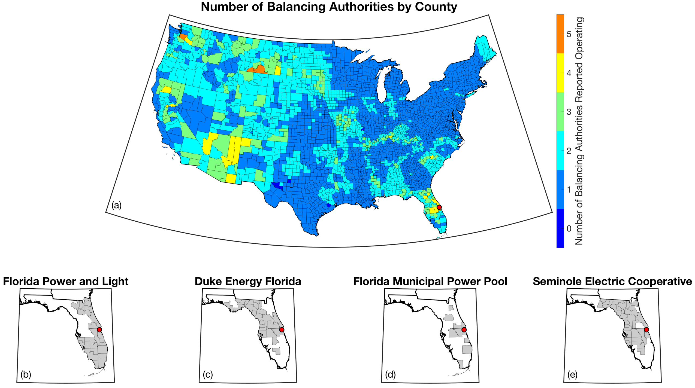

User Guide
Setting up a tell run
The following with introduce you to the input data required by tell and how to set up a configuration file to run tell.
Configuration file setup
The tell package utilizes a YAML configuration file customized by the user with scenario-specific settings.
The following are the required values if your wish to construct your own configuration files:
settings
These are required values for project-level settings.
Name |
Description |
Unit |
Type |
|---|---|---|---|
run_year |
Target year to run in YYYY format |
year |
int |
scenario_name |
Name of the combined population and climate scenario |
NA |
str |
output_directory |
Directory to write the output data to |
NA |
str |
The following is an example implementation in the YAML configuration file:
settings:
run_year: 2020
scenario_name: rcp45cooler_ssp3
output_directory: <your output directory>
Tutorials
Jupyter Notebooks
tell quickstarter
The following is a link to a Jupyter Notebook to run tell: tell quickstarter
Fundamental concepts
The following are the building blocks of how tell projects future loads.
Scenarios
tell is designed to work in conjunction with the United States version of the Global Change Analysis Model (GCAM-USA) to explore different future scenarios of population and climate change. The models are configured to run the following combinations of Representative Concentration Pathways (RCPs) and Shared Socioeconomic Pathways (SSPs):
Climate Scenario |
Population Scenario |
scenario_name |
|---|---|---|
RCP 4.5 - Cooler |
SSP3 |
rcp45cooler_ssp3 |
RCP 4.5 - Cooler |
SSP5 |
rcp45cooler_ssp5 |
RCP 4.5 - Hotter |
SSP3 |
rcp45hotter_ssp3 |
RCP 4.5 - Hotter |
SSP5 |
rcp45hotter_ssp5 |
RCP 8.5 - Cooler |
SSP3 |
rcp85cooler_ssp3 |
RCP 8.5 - Cooler |
SSP5 |
rcp85cooler_ssp5 |
RCP 8.5 - Hotter |
SSP3 |
rcp85hotter_ssp3 |
RCP 8.5 - Hotter |
SSP5 |
rcp85hotter_ssp5 |
{kind=link}
{kind=link}
{kind=link}
{kind=link}
{kind=link}
{kind=link}
{kind=link}
{kind=link}
{kind=link}
{kind=link}
{kind=link}
{kind=link}
{kind=link}
{kind=link}
{kind=link}
{kind=link}
{kind=link}
{kind=link}
{kind=link}
{kind=link}
{kind=link}
{kind=link}
{kind=link}
{kind=link}
{kind=link}
{kind=link}
{kind=link}
{kind=link}
{kind=link}
{kind=link}
{kind=link}
{kind=link}
{kind=link}
{kind=link}
{kind=link}
{kind=link}
{kind=link}
{kind=link}
{kind=link}
{kind=link}
{kind=link}
{kind=link}
{kind=link}
{kind=link}
{kind=link}
{kind=link}
{kind=link}
{kind=link}
{kind=link}
{kind=link}
{kind=link}
{kind=link}
{kind=link}
{kind=link}
Geolocating Balancing Authorities
As a spatially-explicit model, tell needs the ability to geolocate loads predicted by the model. Since the fundamental predictions in tell occur at the spatial scale of BAs, we needed to devise a way to determine where each BA operated within the U.S. For tell, being able to do this geolocation using county boundaries has a number of benefits in terms of load disaggregation and reaggregation - so we focused on techniques to map BAs to the counties they operate in. While there are multiple maps of BA service territories available online, there are several fundamental challenges to using maps generated by others:
1. The provenance of the data and methodology underpinning most of the maps is unknown. In other words, there is no way to determine how the BAs were placed and if the methods used to do so are robust.
2. The maps often depict the BAs as spatially unique and non-overlapping. For county-scale mapping at least, we know this to be untrue. Additionally, the maps are mostly static representations of how BAs were configured at a single point in time. As the actual territory of BAs can and does change over time, this presents challenges for placing BA loads occurring over a range of years.
3. Maps available online are often cartoon or stylized versions of reality with curvy lines that do not follow traditional geopolitical boundaries. As such, to go from the cartoon map to an actual list of counties that a BA operates in would necessitate a number of subjective decisions that are not 100% reproducible from person to person.
Given these limitations, we devised our own method to geolocate BAs in tell. We eventually found a publicly available dataset from the EIA that served as our foundation. The EIA-861 dataset is an annual report describing the characteristics of the electric power industry in the U.S. Among other information, EIA-861 contains two sets of data that are critical to tell:
The “Service_Territory_YYYY.xlsx” spreadsheet provides a list of every county that a given utility operates in:
{kind=link}
The “Sales_Ult_Cust_YYYY.xlsx” spreadsheet provides the BA that each utility reports to in a given state:

Using these two datasets in combination, tell reverse engineers the counties that each BA likely operated in within a given year. In addition to being completely objective and reproducible, this method overcomes the limitations described above because it allows more than one BA to be mapped to a single county and also allows the geolocation of BAs to evolve over time. tell maps BA service territory annually from 2015-2019. The results of that mapping are contained in the .csv files below and are summarized graphically in the map. The spatial extent of each BA in 2019 is shown in the “Summary_Figure” link for each BA in the table above.
{kind=link}
This figure shows the number of BAs that tell identifies as operating within each county in 2019. The bottom panel shows an example of four different BAs reported operating in Brevard County, FL. While the majority of counties only have one BA identified, some counties have as many as five. Note that a handful of counties had zero BAs identified as operating within them in 2019.
Year |
Mapping File |
|---|---|
2015 |
|
2016 |
|
2017 |
|
2018 |
|
2019 |
Load Disaggregation and Reaggregation
tell uses multiple instances of load disaggregation and reaggregation in order to cross spatiotemporal scales. The fundamental predictions in tell occur at the spatial scale of BAs. In order to compare those hourly load values at the BA-level with the annual state-level load values produced by GCAM-USA we first disaggregate the hourly predicted BA-level loads to the county-level and then reaggregate those hourly county-level loads to an annual total load prediction for each state. For each BA we identify the counties that BA operates in using the methodology described above. We then use the county-level populations for those counties to determine the fraction of the BA’s total load that should be assigned to each county. A graphical depiction of this for the ISNE BA is shown below. The load received by each county in a BA’s service territory thus has the same shape and temporal patterns, but the magnitude varies depending on the population in that county relative to the total population in the BA’s service territory. As there are spatial overlaps in BAs, many counties receive partial loads from more than one BA.

Once the load projections from all BAs in tell have been disaggregated to the county-level, we next sum up the loads from all counties in a given state to get annual total state-level loads which are scaled to match the projections from GCAM-USA. The scaling factors for each state are then applied to all county-level hourly load values in that state. The final output of tell is thus a series of 8760-hr time series of total electricity loads at the state-, county-, and BA-level that are conceptually and quantitatively consistent with one another.
It is important to note that the future evolution of population is also taken into account in tell. Projected annual changes in population for each county and state are generated using the SSP scenarios. Those future populations are used in post-processing the MLP models and to derive new weighting factors to be used in disaggregating and reaggregating future tell loads. Thus, in an example scenario where lots of people move to Southern California, the counties there would not only receive a higher proportion of the BA-level loads for BAs operating there, but would also have an incrementally larger impact on the future total hourly load profile for California as a whole.
Multi-Layer Perceptron (MLP) Models
tell uses a series of multilayer perceptron (MLP) models to predict future loads. There is one unique MLP model for each BA. The MLP models are trained on historical load data from the EIA-930 dataset and weather from IM3’s historical runs using the Weather Research and Forecasting (WRF) model. The MLP models for each BA were trained on data from 2016-2018 and evaluated against observed loads from 2019. Details of the MLP predictive variables are included in the table below.
Predictive Variable |
Description |
Units/Format |
|---|---|---|
Temperature |
2-m temperature from WRF (T2) |
K |
Specific humidity |
2-m water vapor mixing ratio from WRF (Q2) |
kg kg -1 |
Shortwave radiation |
Downward shortwave radiative flux from WRF (SWdn) |
W m -2 |
Longwave radiation |
Downward longwave radiative flux from WRF (GLW) |
W m -2 |
Wind speed |
Wind speed derived from 10-m U and V wind components from WRF (U10 and V10) |
m s -1 |
Day of the week |
Day of the week |
Weekday or weekend |
Hour of the day |
Hour of the day in UTC |
00-23 |
Population |
Total population in the counties covered by the BA |
NA |
Key outputs
tell produces four types of output files. Each type of output is both written out as a .csv file in the output_directory and
returned as a Pandas DataFrame. Each type of output file can be suppressed by commenting out the relevant line in tell.execute_tell.
Missing values in each output file are coded as -9999. All times are in UTC.
State summary data
This output file gives the annual total loads for each of the 48 states in the CONUS and the District of Columbia. It also contains the scaling factor for each state that force the aggregate annual total loads from tell to agree with those produced by GCAM-USA.
Filename: TELL_State_Summary_Data_YYYY.csv
DataFrame: TBD
Name |
Description |
Units/Format |
|---|---|---|
Year |
Year of load |
NA |
State_Name |
Name of the state |
NA |
State_FIPS |
FIPS code of the state |
NA |
State_Scaling_Factor |
Scaling factor to force agreement between tell and GCAM-USA annual total loads |
NA |
GCAM_USA_Load_TWh |
Annual total load for the state from GCAM-USA |
TWh |
Raw_TELL_Load_TWh |
Unscaled annual total load for the state from TELL |
TWh |
Scaled_TELL_Load_TWh |
Scaled annual total load for the state from TELL |
TWh |
State hourly load data
This output file gives the hourly time-series of total loads for each of the 48 states in the CONUS and the District of Columbia.
Filename: TELL_State_Hourly_Load_Data_YYYY.csv
DataFrame: TBD
Name |
Description |
Units/Format |
|---|---|---|
State_Name |
Name of the state |
NA |
State_FIPS |
FIPS code of the state |
NA |
Time_UTC |
Hour of the load in UTC |
YYYY-MM-DD HH:MM:SS |
Raw_TELL_State_Load_MWh |
Unscaled hourly total load for the state from TELL |
MWh |
Scaled_TELL_State_Load_MWh |
Scaled hourly total load for the state from TELL |
MWh |
County hourly load data
This collection of output files gives the hourly time-series of total loads for each county in the CONUS and the District of Columbia. These output files are stored in a subdirectory of output_directory named County_Level_Data.
Filename Format: TELL_statename_countyname_Hourly_Load_Data_YYYY.csv
DataFrame: TBD
Name |
Description |
Units/Format |
|---|---|---|
County_Name |
Name of the county |
NA |
County_FIPS |
FIPS code of the county |
NA |
State_Name |
Name of the state the county is in |
NA |
State_FIPS |
FIPS code of the state |
NA |
Time_UTC |
Hour of the load in UTC |
YYYY-MM-DD HH:MM:SS |
Raw_TELL_County_Load_MWh |
Unscaled hourly total load for the county from TELL |
MWh |
Scaled_TELL_County_Load_MWh |
Scaled hourly total load for the county from TELL |
MWh |